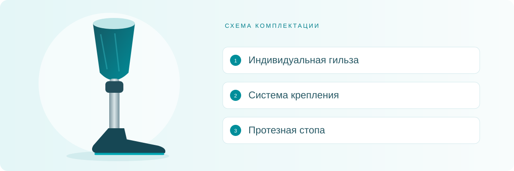
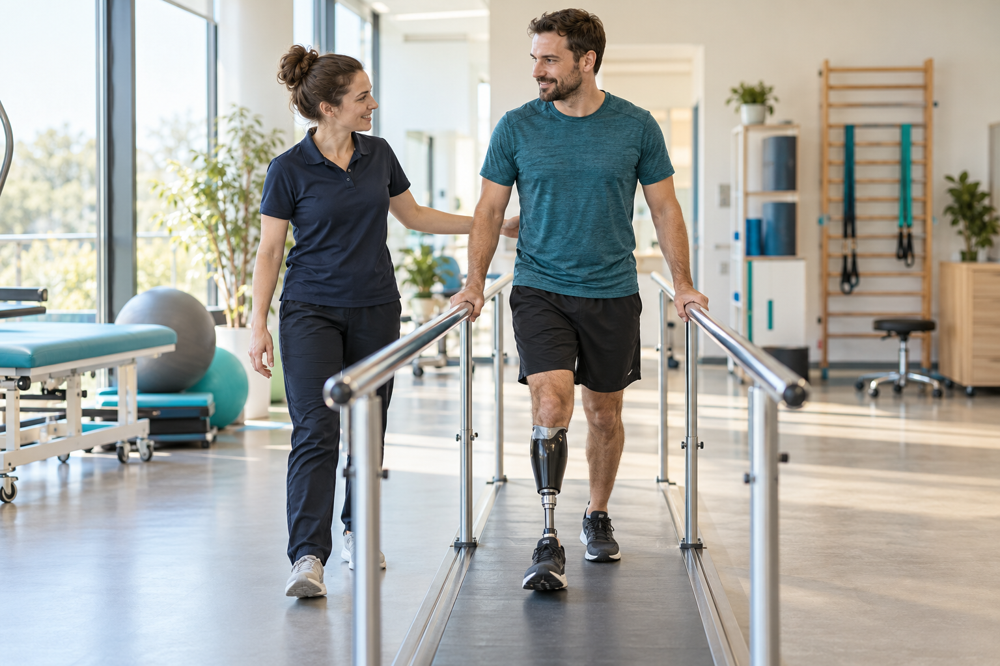

Модульный протез
Индивидуальная гильза, крепление и протезная стопа.
Поможем пройти путь протезирования и подберём комплектующие с учётом ваших потребностей, уровня активности и анатомических особенностей. Поможем с документами и обучим уверенной ходьбе на протезе.
Основная специализация центра — протезирование нижних конечностей любой сложности.
Помогаем пройти путь протезирования и вернуться к активной жизни.
Помогаем получить протез за счёт государства по ИПРА и электронным сертификатам.
Выберите уровень ампутации. Подходящую конструкцию, комплектацию и план освоения протеза обсудим на консультации.
Решения после ампутации ниже колена. Подбираем гильзу, систему крепления и стопу с учётом состояния культи, активности и повседневных задач.

Индивидуальная гильза, крепление и протезная стопа.
Комплектация для повседневной ходьбы, работы и других согласованных задач.
Проверяем комфорт, настраиваем протез и помогаем освоить ходьбу.
Окончательная комплектация определяется после очной оценки специалистом.
Сопровождаем на каждом этапе протезирования. Помогаем разобраться с документами, подобрать подходящий протез и научиться им пользоваться.

Встреча с протезистом. Обсуждаем ситуацию, уровень ампутации, образ жизни и задачи, которые должен решать протез. Отвечаем на вопросы и составляем план дальнейших шагов.
Помогаем разобраться с ИПРА (индивидуальной программой реабилитации), электронным сертификатом и оформлением документов для протезирования за счёт государства.
Подбираем комплектацию протеза под ваши потребности, готовим слепок, изготавливаем гильзу и проводим примерку. При необходимости используем временный протез, пока конечность стабилизируется после операции.
Вместе со специалистами школы ходьбы, помогаем научиться уверенно пользоваться протезом в повседневной жизни и вернуться к привычным делам.
При наличии ИПРА протезирование может быть доступно за счёт государства. В центре LIMB помогаем разобраться, как оформить документы по ИПРА или с использованием электронного сертификата, и сопровождаем на всех этапах.
Разберёмся с ИПРА, направлением на МСЭ по форме 088/у и медицинскими выписками. Подготовим медико-техническое заключение (МТЗ), чтобы в программу вошли корректные характеристики протеза.
Объясним, как оформить сертификат, привязать средства к карте «Мир» и использовать их для оплаты протеза у аккредитованного поставщика.
Подбираем комплектацию протеза под уровень ампутации, образ жизни, физическую активность и рекомендации, прописанные в ИПРА.
Поможем пройти весь путь: от обращения в поликлинику до подписания договора и получения изделия.
Оформление зависит от решения МСЭ и условий ИПРА. Центр LIMB помогает с документами и сопровождением, окончательное решение принимают уполномоченные органы.
Расскажите, на каком этапе вы сейчас и чем планируете заниматься на протезе.
Под ваши задачи и активность.
Персональный менеджер и полное сопровождение с документами.
После получения протеза — помогаем стать его уверенным пользователем.
Принимаем пациентов из любых регионов России.
Основатель LIMB более 12 лет пользуется протезом. В нашей команде также работают люди с протезами, поэтому мы знаем потребности пациентов не только как специалисты, но и на собственном опыте.
Реальные истории людей, которые прошли путь протезирования и вернулись к активной жизни.
Реальные истории людей, которые прошли путь протезирования и вернулись к активной жизни.
Условия гарантии зависят от изделия и его комплектующих. Уточните их у специалиста при подборе протеза.